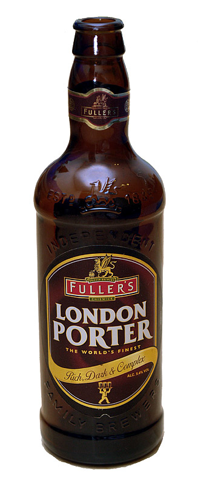
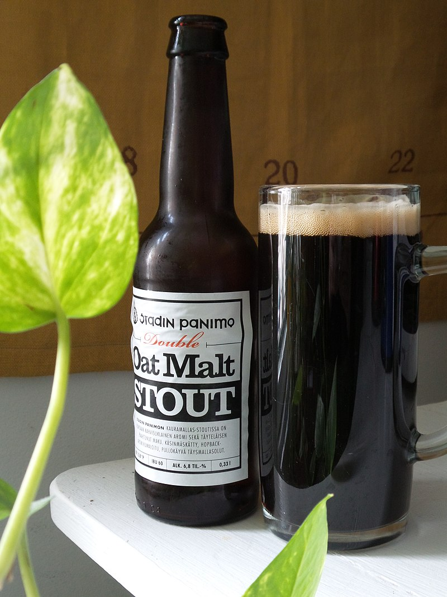
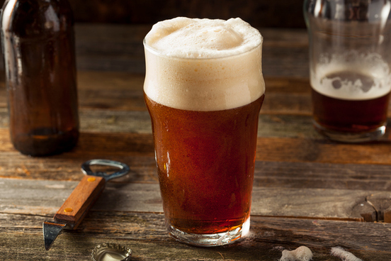
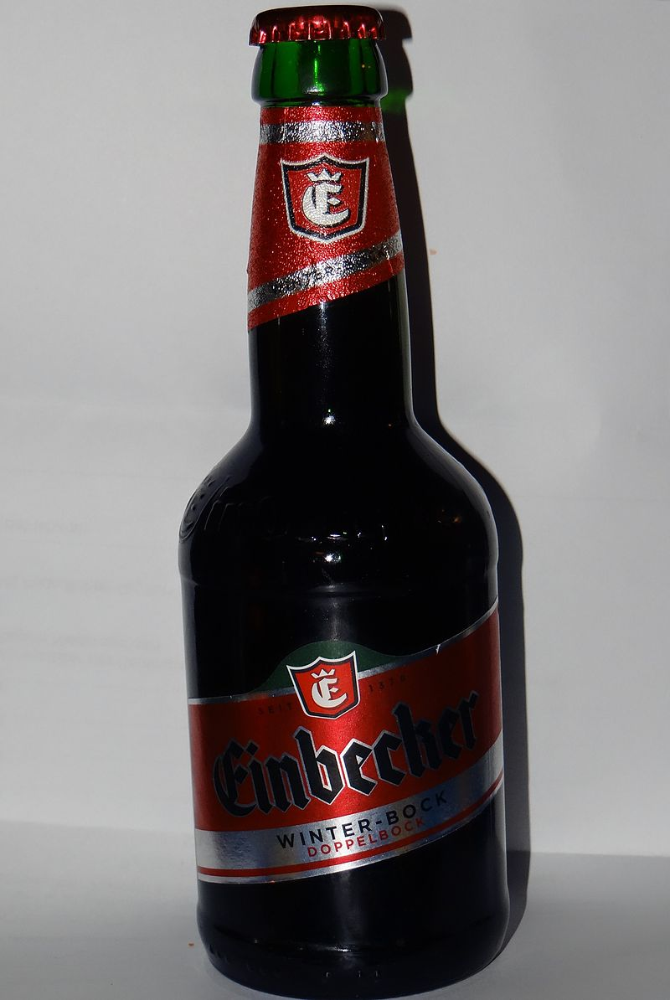
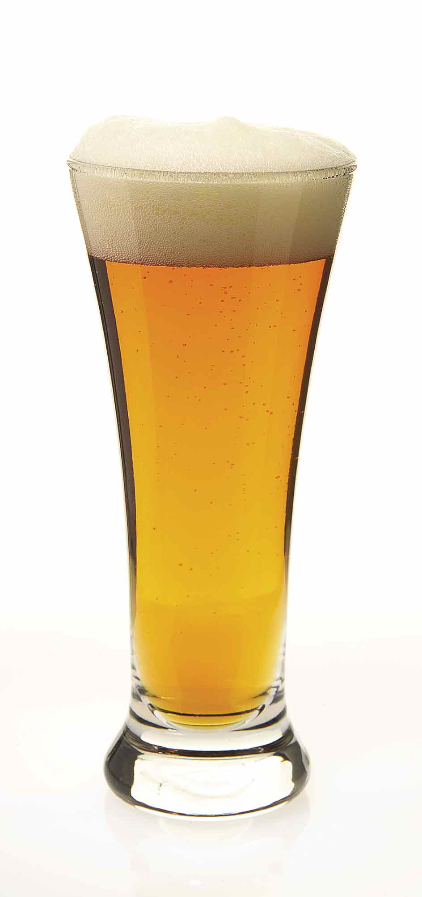
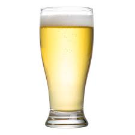
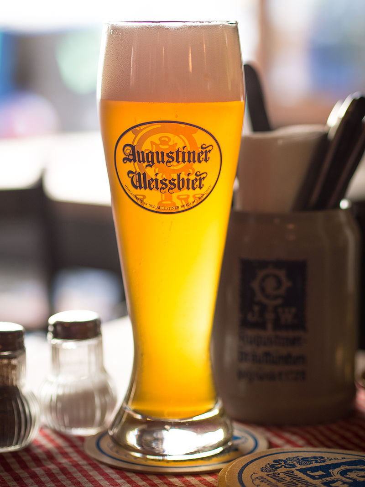

Beer Types
Simply put, a beer style is a label given to a beer that describes its overall character and, oftentimes, its place of origin. It's a name that has been broadly accepted by brewers and consumers after years or even centuries of trial and error, scientific research, and marketing. The styles listed here reflect our own spin on the constantly evolving world of beer, with short, jargon-free descriptions included to help anyone understand the similarities and differences. Use these styles as a guide when reviewing a beer's appearance, aroma, taste. Here the most famous style beer:
- Porter 
- Stout 
- Ale 
- Bock 
- Lager 
- Pilsiner 
- India Pale Ale a.k.a IPA
- Wheat Beer 
A dark style of beer, developed in London from well-hopped beers made from brown malt.
The name was first recorded in the 18th century, and is thought to come from its popularity with street and river porters, who carried objects for others.
The history and development of stout and porter beer types are intertwined. The name "stout", used for a dark beer,is believed to have come about because strong porters were marketed under such names as "extra porter", "double porter", and "stout porter".
The term stout porter would later be shortened to just stout. For example, Guinness Extra Stout was originally called "Extra Superior Porter" and was only given the name "Extra Stout" in 1840.
A dark, top-fermented beer with a number of variations, including dry stout, Baltic porter, milk stout, and imperial stout. The first known use of the word stout for beer was in a document dated 1677 found in the Egerton Manuscripts, the sense being that a "stout beer" was a strong beer, not a dark beer.
A type of beer brewed using a warm fermentation method, resulting in a sweet, full-bodied and fruity taste. Historically the term referred to a drink brewed without hops. As with most beers, ale typically has a bittering agent to balance the malt and act as a preservative.
A bottom fermenting lager that generally takes extra months of lagering (cold storage) to smooth out such a strong brew. Bock beer in general is stronger than your typical lager, more of a robust malt character with a dark amber to brown hue.
A type of beer conditioned at low temperatures. Lagers can be yellow pale, amber, or dark. Pale lager is the most widely consumed and commercially available style of beer.
A type of pale lager. It takes its name from the Czech city of Pilsen, where it was first produced in 1842 by Bavarian brewer Josef Groll. The world's first blond lager, the original Pilsner Urquell, is still produced there today.

A hoppy style within the broader category of pale ale. The export style of pale ale, which had become known as India pale ale, developed in England around 1840, later became a popular product there.
A usually top-fermented, which is brewed with a large proportion of wheat relative to the amount of malted barley. The two main varieties are Weissbier, based on the German tradition, and Witbier, based on the Belgian tradition; minor types include Lambic (made with wild yeasts and bacteria), Berliner Weisse (a cloudy, sour beer), and Gose (a German-type sour, salty, herbal beer).
How to Brew Beer at Home – A Complete Guide for Beginners & Homebrew Enthusiasts
Until recently, making beer at home was a niche occupation practiced by just a few devotees mostly working in isolation for their own enjoyment. These days, however, homebrewing has exploded in popularity and is on the verge of becoming a (gulp!) mainstream activity.
Below we take an in-depth look at how to make beer at home. We’ll explain the different types of brewing, go over the things you’ll need to make your own beer and take you on a step by step journey “from hops to bottle tops.”
Here is a summary on how to brew your own beer:
-Boil 5 gallons of water to 170 degrees Fahrenheit
-Add your specialty grains and let it soak for 30 minutes between 160-170F.
-Add malted extract and aroma hops to the solution and bring it to a boil for 90 minutes.
Cool the mixture with a wort chiller.
-Transfer the cooled wort to the fermenter.
-Activate and pitch yeast. Ferment at 68F to 70F.
-Wait 1-2 weeks as the yeast ferments the sugars to release CO2 and ethyl alcohol.
-After the main fermentation process, add your priming sugar for carbonation.
-Keg or bottle your beer.
There are 4 main ingredients in beer: hops, grains or malt extract (depending on which method you’re using), yeast and water.
The role of the different ingredients is:
-Water – Without water, beer (or any beverage for that matter) would be impossible.
Because more than 95% of your final product will be water, the quality of the water you use will have a big impact on the quality of the final product. Keep that in mind!
-Yeast – Yeast is that which turns your sweet brown “tea” into beer.
Yeast is a single cell organism that eats sugar and converts it into alcohol and CO2. This is called fermentation.
-Grains – Barley is probably the most common type of grain used today although there are plenty of beers out there that use wheat,
corn, and even sorghum or rice. If you’re using the All Grain method, you’ll be purchasing barley in its whole form. If you’re using the extract method, you’ll be purchasing barley malt, which is a soup of sugar and soluble starches that’s ready for fermentation.
-Hops – Hops are those things that give your DIY beer its flavor and aroma.
They also work to counteract the sweetness left over from the fermentation process and act as a bacterial inhibitor.
There are many kinds of hops and different ones produce different flavors.
Brew Your Own Beer.
We often get asked, “How long does it take to brew homemade beer?” Thing is, there are so many variables involved that it’s not possible to give 1 definitive answer that will be accurate for everyone.
That said, if you have all the necessary equipment (including a wort chiller which is a non-essential but sure is a handy time saver), it can take about 3 hours to brew at home
Step 1 Heat the Water:The next thing you have to do is to bring the water in your brewing kettle to about 170 degrees over your burner of choice.
Step 2 Steep the Grains:Fill a muslin bag with the grains from your kit. Tie off the top and steep it like a tea bag in your hot water for about half an hour, stirring occasionally.
Then remove it and rinse it with clean, warm water over the kettle to extract the final bits of flavor for your DIY beer.
Step 3 Add the Malt Extract: Next, we add the malt extract.
This will be pre-portioned and have the consistency of molasses so be patient and make sure you get it all.
In fact, rinse the tub with warm water to make sure you get the last of it and add it to the brew.
Step 4.Bring the Kettle to a Boil : Your water/extract mix is now officially “wort,” or unfermented homemade beer.
Spark up the stove now and bring your wort to a boil. Not an insane, bubbling over the top boil, but a nice slow, gentle boil. Like chicken soup.
Step 5 Add the Hops and Whirlfloc Tablet: Take your hops and place them in a muslin bag in the grains. Tie it off and suspend the bag in the boiling wort for about 90 minutes.
The purpose of the hops is to counteract the sweetness of malt.
About 15 minutes after suspending the bag of hops, add a whirlfloc tablet to sanitize the beer.
Why 90 minutes? Boiling the hops for this long will effectively get rid of approximately 80% of the DMS (Dimethyl Sulfide) content. DMS is a sulfur compound that is a by-product of the fermentation process. The smell of cooked or creamed corn indicates the presence of DMS in your brew.
It is also important to keep the lid off the brew pot while boiling the hops.
Covering the brew pot prevents the DMS from escaping, and it will simply end up back in your beer.
after the 90 minute turn off the burner and let the wort cool.
Step 6 Transfer the Wort: The next step is transferring the cooled wort to the fermenter. Your fermenter should always be slightly bigger than the batch size.
This gives the beer plenty of room to ferment and foam without creating so much internal pressure that the fermenter is compromised.
We don’t advise pouring the wort as you see in the video unless you have a lot of experience. Use the siphon instead.
Step 7 Activating and Pitch the Yeast: The next step is to “pitch” yeast into the wort. “Pitching yeast” is simply brewers’ terms for adding yeast to the wort, which kicks off the fermentation process in earnest.
Why is yeast added to the wort?
Remember that the wort contains considerable amounts of sugar. When yeast is added to solutions with adequate amounts of sugar in it, the sugar is used as fuel to create even more yeast. This is what produces the alcohol in beer. [4]
Depending on the type of yeast used, pitching yeast will also imbue the beer with different flavors and aromas.
Before you pitch your yeast, you will have to activate it first. How you do so will depend on the type of yeast that you use. For home brewing purposes, there are essentially two kinds of yeast:
Dry yeast – Commonly included in brewing kits, this does not require activation. However, you should ensure that it is at room temperature prior to pitching. Otherwise, it will die when it is added to the wort.
Liquid yeast – This DOES require activation, which is done by shaking the container vigorously. You could even make a yeast starter, which primes the yeast for fermentation by allowing it to multiply.
Step 8 Ferment the Beer: Place the airlock on top of the fermenter and then let the whole thing sit for about 2 weeks. During this time the beer will ferment and the airlock will allow CO2 from the fermenting process to escape without letting air or bacteria seep in.
When brewing beer at home, a normal, steady temperature in the room where the ferment is located is crucial. Temperature swings can screw up the process.
Step 9 Carbonate your Beer:After the 2-week fermentation method is complete, you have real beer, although not “beer“ as most modern drinkers understand it.
To produce that, you’ll need to carbonate your beer. And to do that you’ll need to add carbonating sugars and let it sit for another week. (There are more complex ways of carbonation, but this will do for small batches.)
Carbonating sugars are created by mixing 3 or 4 ounces of corn sugar with 1 or 2 cups of water. Mix it thoroughly and pour it into the (now clean) 5-gallon kettle we used earlier. Siphon the beer from the fermenter into the kettle and mix it with the corn sugars.
Step 10 Bottling or Kegging (The Final Step!):Once your beer has fermented for however long your recipe calls for, it is time to keg or rack lagering vessel like a chilled keg.